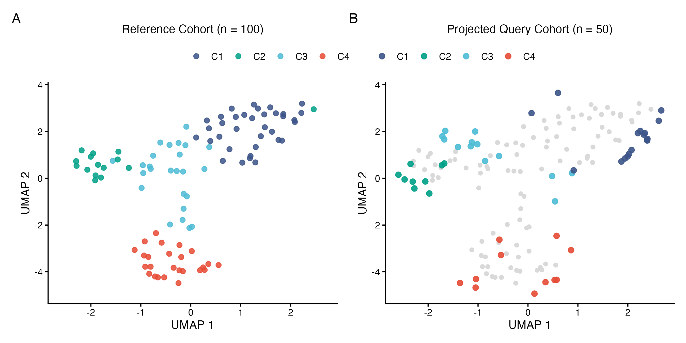

Mapping External Cohorts onto Reference INTERACT GNN Embeddings
cohort-mapping.RmdIntroduction
When analyzing an external validation or query cohort, it is often useful to map the new samples onto the embedding space and clusters defined in a reference cohort rather than clustering the new cohort separately.
In INTERACT, RunInteractAutoencoder() supports
reference-to-query encoding through the
interact.results.query argument. The Graph Autoencoder
(GINEConv) is trained on the reference cohort, and the
query cohort is scaled and encoded using the frozen reference scaler and
model weights.
This vignette demonstrates how to:
- Generate reference (\(n = 100\))
and query (\(n = 50\))
RunInteract()results and encode them into a shared GNN latent space usingRunInteractAutoencoder(). - Assign query samples to reference clusters (
C1,C2, …) using \(k\)-Nearest Neighbors (\(k\)-NN). - Project query samples onto the reference UMAP coordinates and plot both cohorts side by side.
1. Load Libraries
# Load required packages
library(INTERACT)
library(dplyr)
library(class)
library(umap)
library(ggplot2)
library(ggsci)
library(patchwork)2. Generate Reference and Query INTERACT Results
Using the same simulation setup as the first vignette, we generate a reference
cohort (ref.results, \(n =
100\)) and an independent query cohort
(query.results, \(n =
50\)). For the query cohort, we set
run.autoencoder = FALSE during RunInteract()
because its interactions will be encoded jointly against the reference
cohort in the next step.
# Define shared gene symbols and simulation helper
genes = c(
"IL6", "IL6R", "IL6ST", "IFNG", "IFNGR1", "IFNGR2", "CD274", "PDCD1",
"CXCL12", "CXCR4", "TNF", "TNFRSF1A", "TGFB1", "TGFBR1", "TGFBR2",
"CCL2", "CCR2", "CXCL9", "CXCL10", "CXCR3", "ICAM1", "ITGAL", "ITGB2",
"STAT1", "STAT3", "JAK1", "JAK2", "IRF1", "SOCS3", "NFKB1", "NFKBIA",
"RELB", "SMAD2", "SMAD3", "JUN", "FOS", "MYC", "AKT1", "PIK3CA", "PTEN"
)
simulate.cohort = function(n.samples, prefix, seed) {
set.seed(seed)
sample.states = sample(1:5, n.samples, replace = TRUE)
sim.pop = function(pop.offset) {
mat = matrix(runif(n.samples * length(genes), min = 1, max = 4), nrow = n.samples, ncol = length(genes))
for (i in seq_len(n.samples)) {
active.idx = ((sample.states[i] + pop.offset) %% 5) * 8 + (1:8)
active.idx = active.idx[active.idx <= length(genes)]
mat[i, active.idx] = mat[i, active.idx] + runif(length(active.idx), min = 4, max = 7)
}
rownames(mat) = paste0(prefix, "_", seq_len(n.samples))
colnames(mat) = genes
return(mat)
}
modalities = list(
`T cells` = sim.pop(1),
`Macrophages` = sim.pop(2),
`Tumor` = sim.pop(3)
)
cnv = matrix(pmax(0.5, rnorm(n.samples * length(genes), mean = 2.0, sd = 0.5)), nrow = n.samples)
rownames(cnv) = paste0(prefix, "_", seq_len(n.samples))
colnames(cnv) = genes
snv = matrix(
sample(c(-1, 0, 1), n.samples * length(genes), replace = TRUE, prob = c(0.05, 0.85, 0.10)),
nrow = n.samples
)
rownames(snv) = paste0(prefix, "_", seq_len(n.samples))
colnames(snv) = genes
return(list(modalities = modalities, cnv = cnv, snv = snv))
}
# Run INTERACT on the reference cohort (n = 100) and query cohort (n = 50)
n.ref = 100
n.query = 50
ref.sim = simulate.cohort(n.samples = n.ref, prefix = "Ref", seed = 42)
query.sim = simulate.cohort(n.samples = n.query, prefix = "Query", seed = 123)
ref.results = RunInteract(
nontumor.matrices = ref.sim$modalities[c("T cells", "Macrophages")],
tumor.matrix = ref.sim$modalities[["Tumor"]],
snv.matrix = ref.sim$snv,
cnv.matrix = ref.sim$cnv,
n.cores = 1
)
# Set run.autoencoder = FALSE to skip training a separate standalone GNN on the
# query cohort, since query interactions will be encoded using the reference GNN in Step 3
query.results = RunInteract(
nontumor.matrices = query.sim$modalities[c("T cells", "Macrophages")],
tumor.matrix = query.sim$modalities[["Tumor"]],
snv.matrix = query.sim$snv,
cnv.matrix = query.sim$cnv,
run.autoencoder = FALSE,
n.cores = 1
)3. Encode Query Cohort into Reference GNN Space
Next, we pass ref.results and query.results
to RunInteractAutoencoder(). This returns a list containing
$reference (reference embeddings) and $query
(query embeddings projected through the frozen reference encoder). We
also retrieve the reference Louvain cluster assignments from
ref.results and label them C1,
C2, etc.
# Jointly encode reference and query cohorts in a shared GNN space
ae.out = RunInteractAutoencoder(
interact.results = ref.results,
interact.results.query = query.results
)
# Attach reference cluster labels (formatted as C1, C2, ...) to reference embeddings
ref.cluster.df = ref.results$precompute$sample.coords.base |>
dplyr::select(sample, cluster) |>
dplyr::mutate(cluster = sub("^Cluster ", "C", cluster))
cluster.levels = paste0("C", sort( as.integer(sub("^C", "", unique(ref.cluster.df$cluster))) ))
n.clusters = length(cluster.levels)
ref.embeddings = ae.out$reference |>
dplyr::inner_join(ref.cluster.df, by = "sample") |>
dplyr::mutate(cluster = factor(cluster, levels = cluster.levels))
query.embeddings = ae.out$query
# Prepare training (reference) and test (query) matrices
dim.cols = grep("^GNN\\.Dim\\.", colnames(ref.embeddings), value = TRUE)
train.x = as.matrix(ref.embeddings[, dim.cols])
rownames(train.x) = ref.embeddings$sample
train.y = ref.embeddings$cluster
test.x = as.matrix(query.embeddings[, dim.cols])
rownames(test.x) = query.embeddings$sample4. Assign Query Clusters via k-Nearest Neighbors (\(k = 5\))
We classify each query sample by majority vote of its 5 nearest
reference neighbors in the GNN embedding space. Setting
prob = TRUE records the fraction of neighbors supporting
the predicted cluster (prediction.confidence).
# Predict query cluster membership via 5-NN majority vote
set.seed(42)
k.val = 5
pred.y = class::knn(
train = train.x,
test = test.x,
cl = train.y,
k = k.val,
prob = TRUE
)
# Summarize predicted clusters and voting confidence
query.predictions = data.frame(
sample = query.embeddings$sample,
cluster = factor(pred.y, levels = cluster.levels),
prediction.confidence = attr(pred.y, "prob")
)
head(query.predictions)
#> sample cluster prediction.confidence
#> 1 Query_1 C3 0.8
#> 2 Query_10 C2 1.0
#> 3 Query_11 C2 1.0
#> 4 Query_12 C2 0.8
#> 5 Query_13 C3 0.8
#> 6 Query_14 C1 1.05. Project Query Cohort onto Reference UMAP Space
We fit UMAP on the reference embeddings (train.x) and
use stats::predict() to project the query embeddings
(test.x) onto the same 2D coordinate system.
# Fit UMAP model on reference embeddings
set.seed(42)
umap.model = umap::umap(
train.x,
n_neighbors = 15,
min_dist = 0.1,
random_state = 42
)
ref.umap = data.frame(
sample = ref.embeddings$sample,
cluster = train.y,
UMAP1 = umap.model$layout[, 1],
UMAP2 = umap.model$layout[, 2],
cohort = "Reference"
)
# Project query embeddings onto reference UMAP space
query.coords = stats::predict(umap.model, test.x)
query.umap = data.frame(
sample = query.predictions$sample,
cluster = query.predictions$cluster,
UMAP1 = query.coords[, 1],
UMAP2 = query.coords[, 2],
cohort = "Query"
)
# Combine coordinates for plotting
all.umap = dplyr::bind_rows(ref.umap, query.umap)
x.limits = range(all.umap$UMAP1)
y.limits = range(all.umap$UMAP2)6. Visualize Reference and Projected Query Cohorts
Finally, we plot the reference cohort alongside the projected query samples overlaid on the greyed-out reference coordinates.
# Define cluster color palette and shared theme
cluster.colors = rev(ggsci::pal_npg()(n.clusters))
names(cluster.colors) = cluster.levels
umap.theme = ggplot2::theme_classic(base_size = 11) +
ggplot2::theme(
plot.title = ggplot2::element_text(size = 11, face = "plain", hjust = 0.5, color = "black"),
legend.position = "top",
legend.title = ggplot2::element_blank(),
legend.text = ggplot2::element_text(size = 9, face = "plain", color = "black"),
axis.text = ggplot2::element_text(color = "black", face = "plain"),
axis.title = ggplot2::element_text(color = "black", face = "plain")
)
# Panel A: Reference cohort UMAP
plot.ref = ggplot2::ggplot(
all.umap |> dplyr::filter(cohort == "Reference"),
ggplot2::aes(x = UMAP1, y = UMAP2, color = cluster)
) +
ggplot2::geom_point(size = 2, alpha = 0.85) +
ggplot2::scale_color_manual(values = cluster.colors, drop = FALSE) +
ggplot2::coord_cartesian(xlim = x.limits, ylim = y.limits) +
ggplot2::labs(
title = paste0("Reference Cohort (n = ", n.ref, ")"),
x = "UMAP 1",
y = "UMAP 2"
) +
umap.theme +
ggplot2::guides(color = ggplot2::guide_legend(nrow = 1))
# Panel B: Projected query cohort overlaid on reference background
plot.query = ggplot2::ggplot(
all.umap |> dplyr::filter(cohort == "Query"),
ggplot2::aes(x = UMAP1, y = UMAP2, color = cluster)
) +
ggplot2::geom_point(
data = all.umap |> dplyr::filter(cohort == "Reference"),
ggplot2::aes(x = UMAP1, y = UMAP2),
color = "grey85",
size = 1.5,
inherit.aes = FALSE
) +
ggplot2::geom_point(size = 2.2, alpha = 0.9) +
ggplot2::scale_color_manual(values = cluster.colors, drop = FALSE) +
ggplot2::coord_cartesian(xlim = x.limits, ylim = y.limits) +
ggplot2::labs(
title = paste0("Projected Query Cohort (n = ", n.query, ")"),
x = "UMAP 1",
y = "UMAP 2"
) +
umap.theme +
ggplot2::guides(color = ggplot2::guide_legend(nrow = 1))
# Combine panels with shared legend
combined.plot = (plot.ref | plot.query) +
patchwork::plot_layout(guides = "collect") +
patchwork::plot_annotation(tag_levels = "A") &
ggplot2::theme(
legend.position = "top",
plot.tag = ggplot2::element_text(size = 13, face = "plain", color = "black")
)
combined.plot